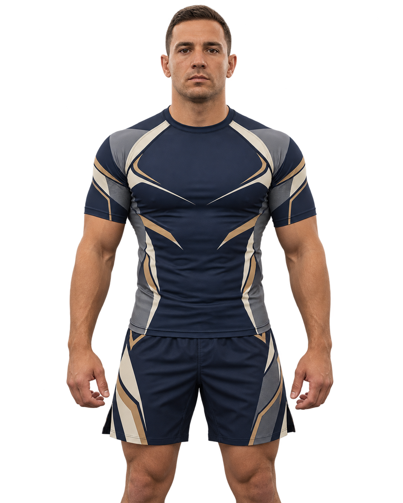
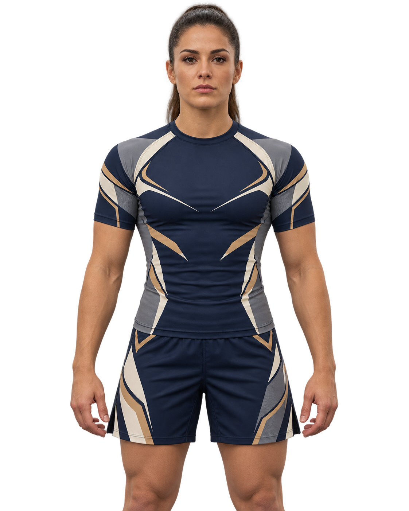

La primera clase impone más de lo que debería. Vas a ver gente rodando en el suelo, oír golpes de palmada y no entender la mitad de los términos. Es normal. Todos los cinturones negros pasaron por ese mismo día.
Qué llevar
Si no tienes gi, entrena con equipo no-gi: una polera ajustada tipo rashguard y shorts deportivos, como en las imágenes de abajo. No hace falta que sea igual: si no tienes ese traje, busca algo similar. Lo importante es que la polera quede ceñida al cuerpo y que la ropa no tenga cierres, botones ni bolsillos donde se enganchen los dedos.


Además trae agua y sandalias para caminar fuera del tatami. Corta tus uñas de manos y pies: es la primera regla de higiene.
Cómo es la clase
Calentamiento de 15 minutos con movimientos propios del Jiu-Jitsu (escapes de cadera, rolls), luego técnica en parejas y al final la rodada. En tu primera clase no haces rodada libre: tu profesor te asigna rounds posicionales con alguien de experiencia.
La palmada
Si una posición te duele o no puedes respirar, das dos palmadas a tu compañero o al tatami. Tu compañero suelta de inmediato. Hacerlo a tiempo no es rendirse, es la forma en que entrenas mañana también.